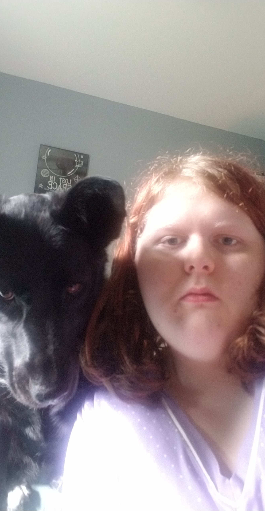

10/28/22
GINGER; explanation, reasoning, what the fuck is going on?!
Tomorrow I turn 19, but that doesn't feel really correct to me.
The past however many months have been a weird super-extension of the phrase "living hell". I continue to have no money, no job, and a "thoroughly barren soul".
The good news is that, at the very least, I have support, and I am medicated. The bad news is that this has unfortunately led me nowhere fast.
Two months ago yesterday, I turned on my Tascam recorder, plugged my guitar and some distortion pedals into the board, sandwiched a microphone uncomfortably between my breasts, wearing nothing but a brassière and briefs. I proceeded to play exactly what is presented to you here.
I attempted to do a proper stereo mix but I broke down partway through. My hands started to hurt badly. I sent a lower quality board output recording to some friends who praised it. I was going to ask a friend to master the final version for me but restrained myself from doing so.
By the time I had awoken the next day, I'd already forgot about it, but that's not entirely uncommon for me currently.
What I do remember is - before and after - I was obviously feeling very, very stressed and in pain, and this is definitely a culmination of such things. While I'd love to say things have come to a happy close, the truth is that it really has not, and that every day is exactly the same, more or less.
I know I'll find my way in due time. For now, you can listen to this weird hour long "therapy session". (I am in actual therapy, by the way.)
It really pains me to even listen to just the vocals to transcribe the lyrics. Please contact me if you can tell what the hell I'm saying at the timestamped points in this song (see included lyrics w/ the song).
I hope someone else can get release from this. I think I will too when it's out there in the world.
8/27/22 [notes in brackets]
Ginger is a mostly single-chord blues reflecting on the past, abuse, emotions, regret, and physical pain.
I improvised most of the lyrics, but a section in the middle was written August 22nd [2022].
It's not really meant as anything more than a way for me to release some pent-up sadness and anger.
Maybe someone will like it.
Instruments:
"Vintage" brand Sunburst Les Paul Clone, electric guit. Wilkinson pickups
Behringer microphone [unknown model]
Unbranded braided cables
Unbranded patch cable
Yamaha AMD-100 - "American Monster Drive" overdrive pedal
BOSS MT-2 - "Metal Zone" distortion pedal
Recorded direct to Tascam SX-1 hard disk, 44.1 kHz, 24 bit, 2x mono tracks.
Mixed & mastered on Tascam SX-1. [this release is not mixed nor mastered]
Kait Bell plays all above instruments and sings.
Kait Bell is a "very accomplished" "multimedia artist" from a weird little town called Innisfil in Ontario, Canada, where she currently resides.
Kait has been making music since she was a child, and started recording her music in the early 2010s.
In the late 2010s, Kait ran the SBR label, which put out about 100 releases in the span of a few years, ranging from improvisational jams to offbeat electronic beats.
Although this prolific "era" has dwindled, Kait still tries to get at least one record out per year.
Kait came out as transgender in 2022, after exploring her gender identity for many years prior.
Despite what you may see and hear, Kait is generally happy to be alive.
left: Kait Bell
right: Kait Bell and her dog Faith, drawing in the background by Sama

WARNING:
the following images are screenshots of the notes app on my phone from the past year.
if you get triggered easily, seriously, don't bother with this.
some of these "unsent letters" are addressed to myself pre-transition, others are for a former lover.
some are just thoughts.
i talk about a lot of heavy subjects including but not limited to:
blood
body dysmorphia
deadnaming & misgendering of a transgender person
death
depressive episodes
fear of forced detransition
gaslighting
gender dysphoria
general relationship issues
hospital visits
memory loss
paranoia
repressing memories
self-blame
self-doubt
self-harm
sex
trauma recollection
one image also contains slurs commonly used against transgender people.
continue at your own risk
Have you heard...